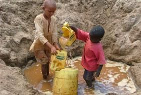
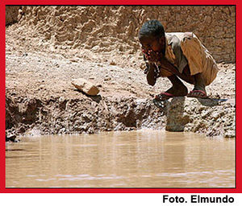
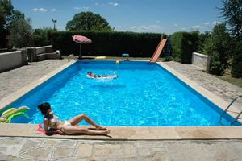

Piscina
 De: La Frikipedia, la enciclopedia extremadamente seria.
De: La Frikipedia, la enciclopedia extremadamente seria.
«Ah... piscinas recuerdo la primera vez que me oriné en una»
~ Yo al corregir este artículo
 Negritos
llenando una piscina
 Negrito
usando la piscina
Una piscina es un agujero en el suelo apañado para aguantar unos cuantos litros de líquido. Y no digo hagua porque lo último que se encuentra en una piscina hoy en día es puramente hagua. Vale, en verano hace mucho calor y el hagua se calienta con el sol y la cantidad de gente que hay jugueteando en ella hacen que el "hagua" se caliente... Es curioso que, en las piscinas que suelen estar divididas por profundidades, la menos profunda siempre esta a punto de hervir y la mas profunda esta extremadamente fría ¿no?. Vale, en la profunda hay mas hagua... ya, ya... y menos críos.
Tipos de Piscina
Piscina Privada
En este tipo de piscina no hay porque preocuparse, excepto por tragarse el orine de otro familiar (no le demos importancia ya que el orine al contener genes de un familiar no nos causara infección, asma, epilepsia u otras cosas no muy importante como esas).
 Claro ejemplo de piscina privada, ¿limpia? no lo creo, notese que el sujeto no puede ingresar al agua por tanta contaminación y solo flota.
Piscina Pública
Lugar donde Umbrella Inc. se deshace de los quimicos inservibles(Generalmente es llenada por negritos con baldes y tazas) y para discimular la enorme radiación, la abre al publico y así nace un lugar donde todos podemos refrescarnos despues de un fin de semana agotador.
Partes
- El Líquido obviamente. Suelen cambiarlo cada 5 años cuando el líquido se vuelve demasiado verde o a una persona le acaba saliendo un tercer ojo o una mano por el oído izquierdo (y sólo en esos tres casos). Si entras en el fluido que no es mas que una mezcla de pis (60%), cloro (35%), y demás sustancias incluida el hagua pura los mocos y los espíritus del hagua que se alimentan de escamas de la piel, juanetes, restos de menstruación, y almas (5%) saldrás seguramente con alguna extremidad de mas.
- El Borde de La Piscina Es el segundo lugar mas visitado cuando se va a la piscina. Sobre todo por aquellos pequeños que intentan caer en el "hagua" de la manera mas extraña posible (la edad de estos pequeños va de 2 a 50 años y suelen ser de sexo masculino) pero siempre acaban visitando el borde que suele estar hecho casualmente de el material mas duro posible... (que por cierto, ¿por qué?, es que cuesta mucho hacer los bordes le la piscina de un material más blandito y menos asesino?) La colisión con el borde suele ser de contacto entre la espalda y el borde o la cara y el borde, y suele enviarte a otro mundo durante un rato al menos. sin mencionar que con esto, la gente que visita el borde de las piscinas añade un nuevo elemento a la mezcla liquida o como otros llaman "hagua".
- El césped Es el sitio en el que va toda la gente y sobre lo que ponen sus toallas de piscina para descansar, tomar el sol o la sombra, sacarse los mocos mientras leen una revista del corazón etc. Suele estar reservado en los dias de mucho calor para la gente que se levanta temprano para ganar un buen sitio, los demás nos tenemos que conformar con el duro y ardiente suelo pavimentado...
- El vestuario Lugar en el que pasan cosas muy raras... En el vestuario de las piscinas nacen muchos artistas, como cantantes de flamenqillo o de "regueton", lástima que en el vestuario masculino la guitarra que se utiliza para tocar sea... algo tan poco parecido a una guitarra... en fin... no se decir lo que pasa en los vestuarios de las chicas por que eso es otra dimensión. Nadie sabe que hay allí, ni que hacen las chicas en él... Sólo ellas claro.
- La sombra Lugar muy buscado y poco encontrado en una Piscina pública las sombras de los árboles suelen estar ocupadas hasta el último centímetro, pero una vez que estas ahí, ya has cumplido tu objetivo de ir a la piscina. (por que a mojarte ni de coña vamos)
- El Snack Lugar donde despues de tomar el sol, consumimos nuestros preciados alimentos, que son preparados humildemente por la tia veneno (peculiar señora de unos 50 años, dientes negros... si es que no se le calleron todos ya, poca higiene, etc), que generalmente vemos sacandose los mocos y limpiandose en nuestros deliciosos y nutritivos alimimentos.
¿Sabias que...

Yamcha preparandose para gozar plenamente de una piscina.
- Si ves flotando algo en el hagua, el 99.99% de las veces son niños no nacidos?
- Cuando por casualidad ingieres algo del liquido que hay en la piscina, ya no es necesario comer por 3 meses?
- La parte profunda de la piscina nos conduce a la octava dimension?
Autor(es):
- Nexo
- MURO DE AGUAS
- Frikiman
- Javidonirilmsteen
- Rada
- Mad Max
Frikipedia 2005-2016, Licencia
GFDL 1.2 - Extraído por FrikiLeaks